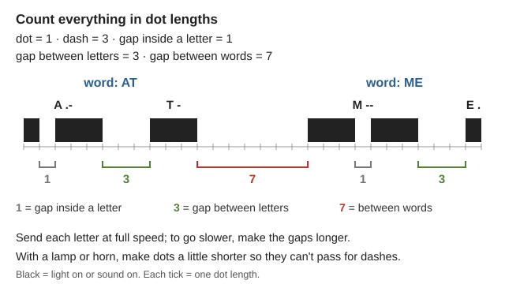
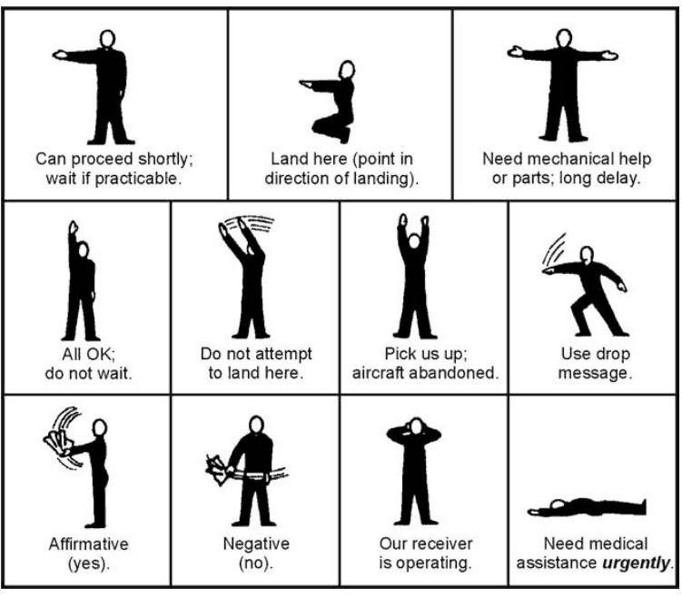
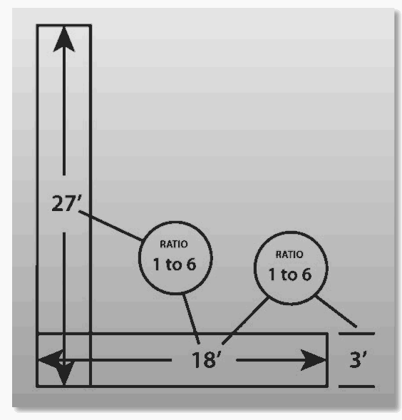
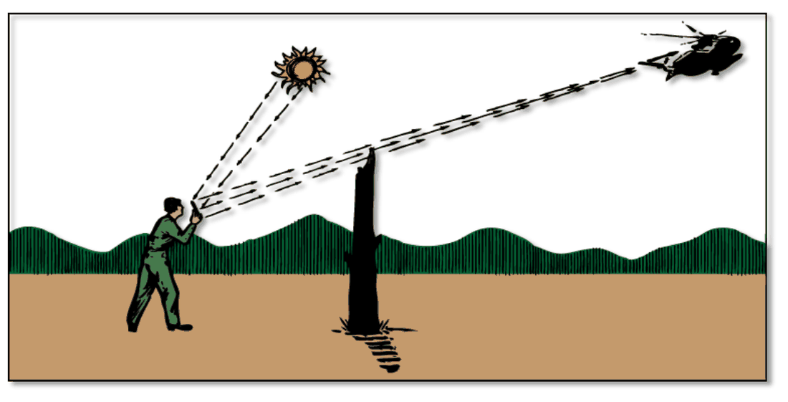

Guides › Radio, community & protection · Emergency · Index A–Z
How to get a message across with no phones and no working radio: learning Morse by ear, sending it by lamp, whistle, flag or smoke, calling for help from the ground to an aircraft, mirrors and signal fires (and their danger in fire season), semaphore, alarm codes, runners, message forms, a neighborhood OK/HELP card plan, and what to listen to. The books are in Comms-Signals\Morse-Code, Comms-Signals\Visual-Sound-Signals and Comms-Signals\Messaging-Plans. Radios: the Radio guide and the Radio-Weather folder.
⚠️ Rules that prevent the worst outcomes
- Three of anything means "help" — three fires, three blasts, three shots. Use threes for nothing else (FM 3-05.70, p. 318).
- No signal fires or "tree torches" in fire season (roughly June–October). In our dry summers they can start a wildfire that kills the people signaling. Use a mirror, cloth panels, ground symbols and sound instead.
- Learn only today's 5-symbol ground code: V = need help, X = need medical help (Pub 102, p. 144; the five symbols drawn). An old Army code in the library uses X for "unable to proceed".
- Never hold a mirror flash on a pilot's cockpit for more than a few seconds — it can blind them (FM 3-05.70, p. 324).
- Learn Morse from the International table only. The 1911 Scout handbook prints old American Morse, different for many letters.
- Agree every alarm signal in advance, and use the alarm bell or horn for nothing else (FM 24-5, p. 129).
Morse is sounds, not dots on paper. Think of each letter as a sound ("di-dah" is A), never count dots and dashes, and practice by whistling or saying the sounds aloud (TM 11-459, pp. 3–5).
Two proven methods (Pierpont, pp. 159–161; pp. 171–172):
A 30-day plan (rule of thumb, built on Koch's rules). A partner sends from the table below by whistle or flashlight while you write what you hear. If you fall behind, stretch the plan — accuracy matters more than the calendar.
| Days | What to do (two half-hour sessions a day) |
|---|---|
| 1–2 | Two letters that sound very different, such as K and M, in random mixes, until you get 9 in 10. |
| 3–20 | Add one letter each time you reach 90% on a 5-minute mix. A common Koch order: K M R S U A P T L O W I N J E F Y V G Q Z H B C D X (general practice). |
| 21–25 | Numbers, then period, comma, question mark and slash. Keep mixing in all the letters. |
| 26–28 | Procedure signals (AR, K, SK, BT, AS) and the calling routine below. Short real messages. |
| 29–30 | Whole messages with your partner, by lamp and by whistle, across a field. |
If you also learn to send on a hand key: the key and how to hold it; Telegraph key.
📚 Go deeper: Pierpont — the whole learning method; TM 11-459 — the Army's sound-method lessons.
International Morse, from Pub 102, p. 21 and ITU-R M.1677-1, pp. 4–5. Read . as "di" (short) and - as "dah" (long). Pictures and sound files: Morse code. To translate, hear it played, flash it as a signal lamp or practise sending it: the 📡 Morse code tool. Printed charts: Pub 102 Morse chart, Navy NEETS chart.
| Letter | Code | Letter | Code | Letter | Code | Letter | Code |
|---|---|---|---|---|---|---|---|
| A | .- |
H | .... |
O | --- |
V | ...- |
| B | -... |
I | .. |
P | .--. |
W | .-- |
| C | -.-. |
J | .--- |
Q | --.- |
X | -..- |
| D | -.. |
K | -.- |
R | .-. |
Y | -.-- |
| E | . |
L | .-.. |
S | ... |
Z | --.. |
| F | ..-. |
M | -- |
T | - |
||
| G | --. |
N | -. |
U | ..- |
| Number | Code | Number | Code | Mark | Code |
|---|---|---|---|---|---|
| 1 | .---- |
6 | -.... |
Period | .-.-.- |
| 2 | ..--- |
7 | --... |
Comma | --..-- |
| 3 | ...-- |
8 | ---.. |
Question | ..--.. |
| 4 | ....- |
9 | ----. |
Slash | -..-. |
| 5 | ..... |
0 | ----- |
Procedure signals — each is sent as one run-together sound with no gap (ITU, p. 5; Pub 102, pp. 24–25, 140; Prosigns for Morse code):
| Signal | Code | Means |
|---|---|---|
| SOS (SOS) | ...---... |
Distress |
| AR | .-.-. |
End of message |
| K | -.- |
Over — your turn to send |
| BT | -...- |
Break between message parts |
| SK | ...-.- |
End of contact |
| AS | .-... |
Wait |
| 8 dots | ........ |
Error, I'll resend |
| R / DE / CQ | Received / "this is" / calling all stations |
Timing is everything (ITU, p. 5; Pub 102, p. 9): a dash is 3 dots long; the gap inside a letter is 1 dot, between letters 3 dots, between words 7 dots. With a lamp or horn, make dots a little shorter so they can't be mistaken for dashes. The standard lamp speed is about 40 letters a minute.

AT ME as on-and-off time: a dash is 3 dots; the gaps are 1, 3 and 7 dots long (a diagram drawn for this guide).How to call (ITU, p. 7): their call sign (no more than twice), DE, your call sign, K. They answer the same way. End each message with AR; whoever sent the last message ends the contact with SK. Without radio licenses, give each household a short call sign — two letters is enough (rule of thumb).
📚 Go deeper: ITU-R M.1677-1 — the official standard; Pub 102 — tables and procedure; NEETS 12, p. 48 — another Morse chart.
| If this goes wrong | Try this (rule of thumb) |
|---|---|
| Dots and dashes blur together | Very short dots, long dashes, clear gaps |
| They keep missing words | Lengthen the gaps, not the letters; send each word twice |
| Lamp can't be seen by day | Use a mirror or a flag |
📚 Go deeper: Pub 102, pp. 17–20 — sound, flag and arm signaling; Signal Book 1916, p. 34 — whistle and drum codes.
Body signals to aircraft — stand in the open, move slowly and repeat until understood (FM 21-60, p. 59; the signals drawn):
| Signal | Means |
|---|---|
| Both arms straight up | "Pick us up" |
| One arm up | "All OK, do not wait" — easy to confuse with the one above, so be deliberate |
| Lying on your back, arms stretched overhead | "Need medical assistance" |
| Arms waving, crossed overhead | "Do not land here" |
| Cloth waved up and down / side to side | Yes / No |
| Arms out to the sides, slowly raised and lowered again and again | Official distress signal (Pub 102, p. 140) |

Body signals to a pilot, each with its meaning; face the aircraft in the open and move slowly (FM 3-05.70, p. 330).How a plane says "understood" (Pub 102, p. 144; AFH 10-644, p. 518): it rocks its wings by day, or flashes its landing or navigation lights twice at night (or flashes Morse T or R). Not understood: it flies straight and level without rocking, or flashes RPT (aircraft replies drawn; Search and rescue).
📚 Go deeper: FM 21-60, p. 59 — body signals drawn; Pub 102, p. 140 — official distress signals; Distress signal.
The code in use worldwide today has five symbols (ICAO) (Pub 102, p. 144; AFH 10-644, p. 516; FM 3-05.70, p. 329). See them laid out: FM 3-05.70 drawing, Pub 102 chart:
| Symbol | Means |
|---|---|
| V | Require assistance |
| X | Require medical assistance |
| N | No |
| Y | Yes |
| ↑ (arrow) | Proceeding in this direction |
Making them seen (AFH 10-644, pp. 514–517):

Sizes for a ground symbol: each line 3 ft wide and 18 ft long (1 to 6), the whole symbol about 18 by 27 ft (AFH 10-644, p. 515).⚠️ Don't mix codes. The older 18-symbol Army code (FM 21-60, p. 60) gives X a different meaning. Teach only the five above.
📚 Go deeper: AFH 10-644, ch. 21 — size, contrast and placement with photos; FM 3-05.70, p. 329 — the five symbols drawn.
The best daytime signal. A mirror flash has been seen up to 100 miles away and it works even on hazy or overcast days (AFH 10-644, p. 509). See Signal mirror.
Aiming without a sighting hole (AFH 10-644, pp. 510–511):

Aiming with a stake (step 3): line the stake top up with the aircraft, then tilt the mirror until the flash lands on the stake top (AFH 10-644, p. 511).📚 Go deeper: AFH 10-644, pp. 509–511 — mirror aiming with pictures; Signal Book 1916 — the heliograph and lantern.
What the manuals teach (AFH 10-644, pp. 511–512):
⚠️ Illinois Valley: June to October, do NOT build signal fires.
- Only about 15% of our yearly rain falls April to September, and summer afternoon humidity runs 25–30% (NRCS soil survey, p. 5). A tree torch or a spark can start a wildfire that kills the people signaling (Wildfire).
- Clearing to bare earth under a tree torch, as the manuals say, is not enough in our brush and grass (AFH 10-644, p. 513; FM 3-05.70, p. 319).
- A gasoline smoke pot can explode when lit (AFH 10-644, p. 514). Pen flares and tracer rounds start fires too (FM 3-05.70, p. 321).
- In fire season use: mirror, cloth panels and ground symbols, a banner on a pole, whistles and horns.
- If you must burn (wet season, or truly no choice): a small fire on a cleared, wetted patch, with water, a shovel and a person watching it, put dead out afterward (general practice).
📚 Go deeper: AFH 10-644, pp. 511–514 — fire and smoke signals; Firewood guide — ashes and fire-season burning rules.
Simple flag colors (FM 21-60, p. 37; Army flag signals drawn): red = danger; green = all clear / understood; yellow = disregard. At night use colored flashlights. Good for a gate or a lookout.
Semaphore spells words with two flags (or bare arms) held at clock positions — by day and in sight only. Pictures: Bluejackets Manual, pp. 444–447 and Flag semaphore; full charts: Bluejackets alphabet, Signal Book 1916 hand-flag chart, FM 24-5 semaphore code.
Siting a flag or lamp station (Signal Book 1916, pp. 43–44):
📚 Go deeper: Bluejackets, p. 444 — semaphore drawn; Signal Book 1916 — semaphore and station siting; FM 21-60 — arm-and-hand signals.
Make a household/neighborhood signal card (rule of thumb — fill in your own and post it):
| Signal | Means | Answer |
|---|---|---|
| 3 blasts, repeated | I need help — come to me | 2 short blasts: "heard you, coming" |
| String of short, sharp blasts / rapid bell | General alarm (fire, intruders) — act on the plan | None needed |
| Red cloth on the gate | Danger, don't come in | |
| Green cloth on the gate | All clear |
📚 Go deeper: Signal Book 1916, pp. 38–41 — alarm and distress signals; FM 24-5, p. 129 — alarm devices.
Briefing a runner (FM 24-5 (1939), pp. 68, 70) — tell them:
Spoken messages must be short. The runner repeats it back to you and memorizes it (p. 70). Write it down whenever you can.
Speeds and relays (FM 24-5, pp. 69, 71–72): a runner covers about 3 mph routine and 5 mph priority (urgent: as fast as they can and still arrive); a rider 6 and 8 mph. On dangerous routes send two runners in sight of each other, each with a copy, or use two routes. Mark routes with arrows at forks. For long, frequent runs, set up relay posts — say, a house halfway to O'Brien (rule of thumb).
Use a standard form. The ICS 213 has To, From, Subject, Date, Time (24-hour clock), Message, Approved by, Reply and Replied by. The sender keeps a copy; the reply comes back on the bottom (ICS Forms Booklet, pp. 65–66; the blank form; Incident Command System). Log every message and event with date and time on an ICS 214 activity log (p. 68).
The ham "radiogram" works on paper too (ARRL manual, p. 34): number and precedence, address, text of 25 words or fewer (X for a period), and signature. The "check" is the word count, so the receiver knows nothing was lost (a filled-in example, part by part).
Precedence (ARRL, p. 36): EMERGENCY (life or death — when in doubt, don't) → PRIORITY → WELFARE → ROUTINE.
Short codes save time:
📚 Go deeper: FM 24-5 (1939) — messengers, relay posts and a message center; ICS Forms Booklet — print blank 213 and 214 forms now; ARRL manual, pp. 33–39 — radiogram form and numbered texts.
From the rural edition of Map Your Neighborhood (MYN Rural, pp. 1–2):
Who to check first (MYN Discussion Guide, p. 8): HELP homes, then homes with no card — people there may be hurt. Then recheck the OK homes. Print the HELP/OK window card now (what it looks like).
Your household plan: a meeting place, a way to find each other if separated, and an out-of-area contact, posted at home (Oregon 2 Weeks Ready, p. 6; FEMA, p. 18). Add the neighborhood site, your signal card and a check-in time (rule of thumb).
Locally: the county plan counts on door-to-door notice, broadcast stations and amateur radio, and the RVCOG Disaster Registry lists residents needing special help (County EOP, p. 71). Know who they are on your road.
📚 Go deeper: MYN Discussion Guide — the first meeting, 9 steps after a disaster, neighbor map; MYN Rural — rural sites, wells and propane.
📚 Go deeper: NOAA Weather Radio brochure — how SAME alerts work; Radio guide — shortwave, crystal sets and local frequencies.
| Book and page | What it says | Do this instead |
|---|---|---|
| Scout Handbook 1911, p. 230 | Morse chart | It is American (railroad) Morse, different for many letters. Use the International table above. |
| Scout Handbook 1911, p. 232; Seton, p. 132 | Myer "wigwag" flag code | Obsolete. Use Morse by flag (left = dash, right = dot) or semaphore. |
| Signal Book 1916, p. 37 | Phonetic alphabet "Able, Boy…" | Use the NATO alphabet (Alpha, Bravo…) in the Radio guide. |
| Seton, p. 271 | Two smokes = "I am lost"; three smokes = "good news"; a two-shot/one-shot hunters' code | Today three of anything = distress. |
| FM 21-60, p. 60 | 18-symbol ground code; X = "unable to proceed" | Use the 5-symbol code: X = need medical help. |
| FM 3-05.70, p. 328 | Whistle heard "1.6 km (3/4 mile)" | 1.6 km is 1 mile, not 3/4. Plan on 200 yards. |
| AFH 10-644, pp. 513–514; FM 3-05.70, pp. 319, 321 | Tree torches, gasoline smoke pots, pen flares, tracer rounds | Fire and explosion hazards. Never in fire season. |
📚 Go deeper: Pub 102 — today's international distress signals; AFH 10-644 — the modern survival-signaling chapter.
Look before you try it. 🖼️ = drawings in the books on this drive; 📷 = photos in the offline Wikipedia.
Morse code
Light, sound and smoke
Talking to aircraft
Signal mirrors
Flags and semaphore
Messages and neighbors